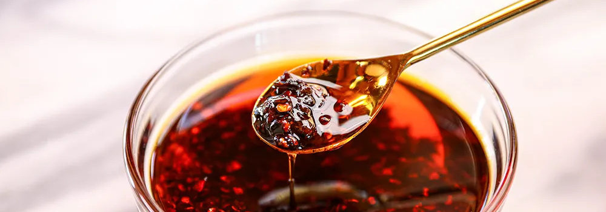

Our Favourite Chilli Oil

Congratulations! You've won a jar of our favourite chilli oil. It's a great condiment, we make it ourselves and we love using it in lots of different ways, so we thought it would be fun to share with some of our favourite people.
How to use chilli oil
Some of our favourite ways to use our chilli oil include:
- drizzled over avocado toast
- drizzled with soy sauce over dumplings
- dan dan noodles
- drizzled over a creamy bowl of ramen
If you enjoy the chilli oil, here's how you can make it yourself:
Ingredients:
2 tsp Sichuan peppercorns
4 tbsp red pepper powder (we use Korean gochugaru)
2 tbsp sesame seeds
1 star anise
1 bay leaf
1 tsp sesame oil
1 cup grapeseed oil
1 small piece ginger
Method:
- Crush the peppercorns in a pestle and mortar. Then, add all of the dry ingredients and sesame oil into a mason jar (you can pre-warm the glass with hot water to prevent cracking)
- Heat the grapeseed oil in a saucepan over medium high heat for about 5-8min
- Place the ginger in the oil
- When the ginger turns golden brown, remove it, and turn the heat off
- Carefully pour the hot oil into the mason jar
- Once cool, store in the fridge
We hope you enjoy it!
Lots of love,
Alex & James
Alex & James, 2022